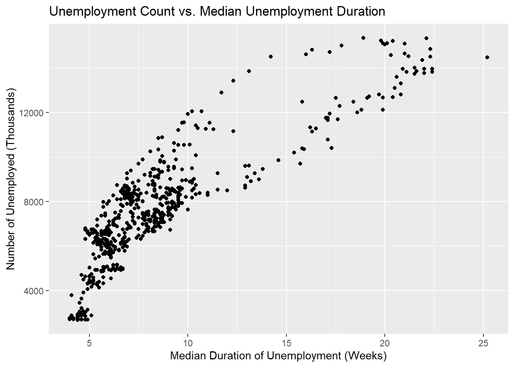
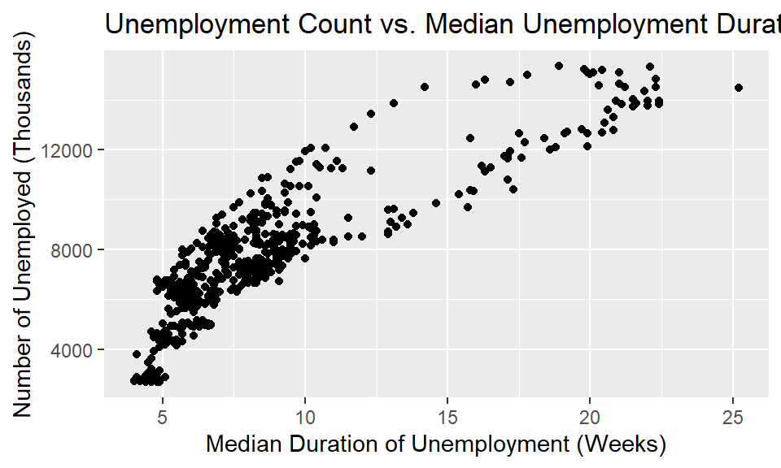

# Assign text to variable X
X <- "This is my first assignment"
X[1] "This is my first assignment"title: “M01-2-Introduction to Literate Programming-Application Assignment” author: “Jake Evans” date: ‘2026-06-09 19:08:16’ format: html: toc: true toc-depth: 4 number-sections: true code-line-numbers: true code-fold: false code-link: true embed-resources: true theme: flatly highlight-style: monokai css: editor: visual execute: freeze: auto warning: false —
This assignment introduces literate programming using Quarto Markdown in RStudio. Each exercise below combines code, output, and narrative to create a self-sufficient, reproducible document. This is due to not having access to the original document after the semester ends.
Create a variable called
Xand assign the text “This is my first assignment” to it.
Use <- to assign a value to a variable in R.
# Assign text to variable X
X <- "This is my first assignment"
X[1] "This is my first assignment"Since there are two sub-exercises, sub-headings are used below.
paste() FunctionLook up the
paste()function from help and run some example code from the documentation.
Use ?paste in the console to open the help page. Examples are at the bottom.
Adding ‘?’ in front of a command will bring up the R Studio help menu.
# Examples from the paste() help documentation
paste("Hello", "World")[1] "Hello World"paste("a", "b", "c", sep = "-")[1] "a-b-c"paste(1:3, collapse = " + ")[1] "1 + 2 + 3"Using paste0() is just a shortcut version of paste() with no separator between the strings. So:
paste0("x", 1:3)[1] "x1" "x2" "x3"paste() to Extend XUsing
paste(), add “and I’m loving it!” toX.
# Combine X with additional text
X <- paste(X, "and I'm loving it!")
X[1] "This is my first assignment and I'm loving it!"Create a vector called
Ywith the numbers 2, 3, 4, and 5. Then multiply it by 2 and save it back asY.
# Create vector Y
Y <- c(2, 3, 4, 5)
# Multiply by 2 and overwrite Y
Y <- Y * 2
Y[1] 4 6 8 10Print both the variable
Xand the vectorY.
# Print X and Y
X[1] "This is my first assignment and I'm loving it!"Y[1] 4 6 8 10Show the maximum and minimum values of vector
Y.
# Max of Y
max(Y)[1] 10# Min of Y
min(Y)[1] 4economics DatasetLoad the
ggplot2package and view the first six rows of theeconomicsdataset.
If you have already installed ggplot2, you can comment out the install.packages() line.
# install.packages("ggplot2") # Uncomment if not yet installed
library(ggplot2)
head(economics)# A tibble: 6 × 6
date pce pop psavert uempmed unemploy
<date> <dbl> <dbl> <dbl> <dbl> <dbl>
1 1967-07-01 507. 198712 12.6 4.5 2944
2 1967-08-01 510. 198911 12.6 4.7 2945
3 1967-09-01 516. 199113 11.9 4.6 2958
4 1967-10-01 512. 199311 12.9 4.9 3143
5 1967-11-01 517. 199498 12.8 4.7 3066
6 1967-12-01 525. 199657 11.8 4.8 3018economics DatasetUnderstand the dataset via the help document, define its variables, select two related variables, and create a chart.
Use ?economics in the console to view the full help documentation for this dataset.
Variable Definitions:
I chose unemploy (number of unemployed) and uempmed (median unemployment duration) because they are likely positively related subce periods of high unemployment may also see longer unemployment spells.
# Build the base plot and assign it to 'plot'
plot <- ggplot(economics, aes(x = uempmed, y = unemploy)) +
geom_point()
# Add title and axis labels
plot +
labs(
title = "Unemployment Count vs. Median Unemployment Duration",
x = "Median Duration of Unemployment (Weeks)",
y = "Number of Unemployed (Thousands)"
)
Replicate the chart above using a pipe operator in one chain of code. Add a figure label, caption, and set width to 5 with aspect ratio 0.6.
Use #| inside the code chunk to control figure options like fig-label, fig-cap, fig-width, and fig-asp.
# One piped chain — no intermediate plot object saved
economics |>
ggplot(aes(x = uempmed, y = unemploy)) +
geom_point() +
labs(
title = "Unemployment Count vs. Median Unemployment Duration",
x = "Median Duration of Unemployment (Weeks)",
y = "Number of Unemployed (Thousands)"
)
Describe findings using a callout block with cross-referencing.
Findings
As shown in Figure 1, there is a generally positive relationship between the median duration of unemployment and the total number of unemployed individuals. When unemployment spikes, people tend to remain unemployed for longer periods. Interestingly, there appear to be clusters suggesting distinct economic periods, which are likely corresponding to recessions; where both variables rise together sharply.
This section summarizes the Quarto tools used throughout this document to make it reproducible, navigable, and visually organized.
The following tools were implemented across this report to meet the assignment requirements and improve document quality.
Tools Implemented:
#, ##, and ### for hierarchical headings**text** for emphasis on key terms and variable names*text* for stylistic emphasis in the introductioncallout-tip used for hints throughout the exercisescallout-note used to flag the help documentation reference and findingscallout-important used to highlight the tools summary in Ex 10>) used before every task for consistent visual formatting`) used around function names like paste(), ggplot(), etc.@fig-unemployment to refer to the figure in Ex 9#| chunk options used in Ex 8 to control figure label, caption, width, and aspect ratio